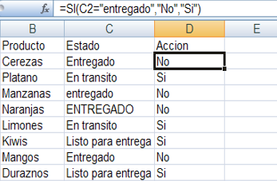
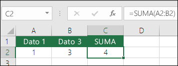
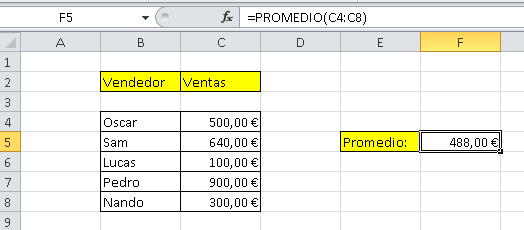

Que es excel?
inicio
Excel es un programa informático desarrollado por la empresa Microsoft y que forma parte de Office que es una
suite ofimática que incluye otros programas como Word y PowerPoint.Excel tiene
distintas funciones como por ejemplo permite sumar, restar, dividir, multiplicar, hacer promedios para las tablas y
tambien permite a personas como empresarios y contadores a tener sus cuentas claras para no cometer errores posteriormente.
funciones de excel
inicio
*SUMA: suma de varios elementos.
*SUMAR.SI: suma de varios elementos con una condición.
*SUMAR.SI.CONJUNTO: suma de varios elementos con varias condiciones.
*MMULT: multiplicar dos matrices. De tipo matricial.
*CONTAR: contar los elementos que hay en un rango.
*CONTAR.SI.CONJUNTO: contar los elementos de una lista dependiendo de varias condiciones.
*ENTERO: extraer el número entero de un valor.
*PROMEDIO: calcula la media aritmética de un rango de celdas.
*PROMEDIO.SI.CONJUNTO: contar valores de un rango que cumplen con ciertas características.
Condicional si en excel
inicio
La función SI es una de las funciones más populares de Excel y le permite realizar comparaciones
lógicas entre un valor y un resultado que espera.
Por esto, una instrucción SI puede tener dos resultados. El primer resultado es si la comparación es Verdadera
y el segundo si la comparación es Falsa.

sumas
inicio
La función suma agrega valores. Puede sumar valores individuales, referencias o rangos de celda o una combinación de las tres.

promedio
inicio
La función promedio de Excel calcula la media aritmética de una serie de datos. Es decir, suma todos los
valores de la variable que estamos analizando y los divide entre la cantidad de valores sumados.
Excel además de calcular de forma automática el promedio de una serie de datos, nos permite introducir una o
varias condiciones a cumplir para realizar el cálculo del promedio. Veremos una a una cada una de las opciones
